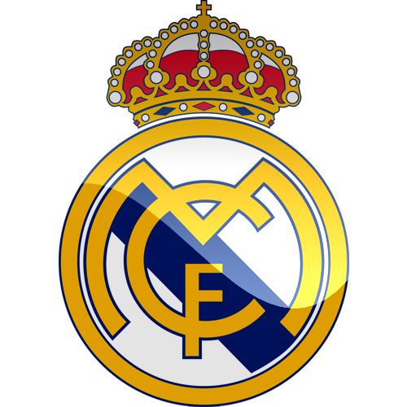

<!--
  Generated template for the ScoreboardPage page.

  See http://ionicframework.com/docs/components/#navigation for more info on
  Ionic pages and navigation.
-->
<ion-header>
  <ion-navbar>
    <ion-title>Score</ion-title>
  </ion-navbar>
</ion-header>

<ion-content padding>
    <div class="flex-container">
        <div style=" background-color:transparent"></div>
        <div>{{score1}}</div>

        <div style=" background-color:transparent"><button (click)="incrementScore1()" button ion-button color="secondary"><ion-icon name="add"></ion-icon>&nbsp;Goal</button></div>

        <div style=" background-color:transparent;"><button (click)="reset()" ion-button color="danger" ><ion-icon name="trash"></ion-icon>&nbsp;Clear</button></div>
       
      </div>


        <div class="row-reverse">
            <div style=" background-color:transparent"></div>
         <div>{{score}}</div>

         <div style=" background-color:transparent"><button (click)="incrementScore()" ion-button color="secondary" ><ion-icon name="add"></ion-icon>&nbsp;Goal</button></div>
         
          
        </div>
        <div><iframe width="330" height="261" src="https://www.youtube.com/embed/5vnUufJ4IZg" frameborder="0" allow="accelerometer; autoplay; encrypted-media; gyroscope; picture-in-picture" allowfullscreen></iframe></div>
</ion-content>
